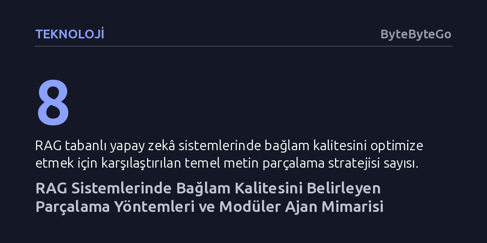

TEKNOLOJI · ByteByteGo · 2026-10-18
RAG sistemlerinin ve yapay zekâ ajanlarının başarısı, veriyi körlemesine bölmek yerine anlamsal ve dinamik parçalama stratejileri kullanmaya dayanıyor. Devasa istemler yerine ihtiyaç anında yüklenen modüler beceriler, modelin bağlam penceresini dar tutarak işlem maliyetini ve başarım kayıplarını önlüyor.
Yapay zekâ sistemlerinde performans kaybının asıl nedeninin model yetersizliği değil, bilginin modele nasıl parçalanıp hangi modüler yapıyla aktarıldığı olduğunu gösterir.

Büyük dil modelleri harici veri kaynaklarıyla entegre edildiğinde en büyük darboğaz, modele sunulan bağlamın kalitesidir. Dokümanları rastgele veya kontrolsüz biçimde modele aktarmak, bilgi kirliliğine, işlem maliyetlerinin fırlamasına ve modelin doğru yanıtı bulamamasına yol açar. Bu yüzden arama destekli üretim (RAG) mimarilerinde belgeleri doğru boyut ve mantıkla parçalara ayırmak (chunking), sistemin tüm başarısını doğrudan belirler.
İlk akla gelen yöntemler metinleri sabit belirteç (token) aralıklarıyla ya da paragraf ve satır gibi doğal ayrımlarla özyinelemeli olarak kesmektir. Bu kuralcı yaklaşımlar hızlı ve düşük maliyetli olsa da cümlenin veya fikrin tam ortasından bölme riski taşır. Bir düşüncenin iki ayrı parça arasında bölünmesi, geri getirme aşamasında anlamsal bütünlüğün tamamen kaybolmasına neden olur.
Kural tabanlı yaklaşımların yetersiz kaldığı senaryolarda anlamsal ve model destekli parçalama teknikleri öne çıkar. Anlamsal parçalama (semantic chunking), cümleleri vektör uzayında karşılaştırıp benzerlik oranının keskin düştüğü noktaları saptayarak yeni parçayı başlatır; böylece uzunluk tahminleri yerine gerçek konu değişimleri yakalanır. Daha ileri düzey bir seçenek olan model destekli parçalamada ise bir dil modelinden metni bağımsız önermelere dönüştürmesi istenir; bu yöntem çok yüksek getirme kalitesi sağlasa da devasa veri havuzlarında maliyetli bir çözümdür.
Son dönemde geliştirilen en dikkat çekici yaklaşım ise geç parçalama (late chunking) tekniğidir. Bu yöntemde belgenin tamamı önce gömme (embedding) modelinden geçirilerek tüm bağlam yakalanır, ardından belirlenen sınırlar içinde ortalama havuzlama yapılarak parça vektörleri üretilir. Ajan tabanlı yaklaşımda ise yapay zekâ, belgenin kod, sözleşme ya da tablo olduğunu baştan tespit ederek her dosya türü için en uygun parçalama stratejisini dinamik olarak kendisi belirler.
Yapay zekâ ajanları geliştikçe geliştiricilerin düştüğü en yaygın tuzak, tüm kuralları ve talimatları tek bir devasa sistem istemine (prompt) sıkıştırmaktır. Oysa aşırı uzun istemler dil modelinin dikkatini dağıtır, talimatlara uyma başarısını düşürür ve yanıt süresini uzatır.
Çözüm, devasa tekil istemler yerine modüler bir beceri kataloğu kurmaktır. Ajan, kullanıcının talebini aldığında önce hafif bir beceri listesini tarar ve sadece o görevi çözmek için gereken kılavuz dosyasını (`SKILL.md`) belleğine yükler. İhtiyaç bittiğinde bağlam temizlenir. Böylece modelin bağlam penceresi daima kompakt tutulur ve ajanın davranışı öngörülebilir kalır.
Yapay zekâ modellerinde girdi optimizasyonu kadar, bilginin akış mimarisi de kritik bir rol oynar. Google Translate gibi nöral çeviri sistemleri, kaynak dili milisaniyeler içinde tespit edip alt-kelime belirteçlerine ayırdıktan sonra hedef dil etiketini ekleyerek Transformer katmanlarına aktarır. Çözücü aşamasında ise açgözlü tekil seçimler yerine demet arama (beam search) kullanılarak birden fazla alternatif çeviri aynı anda takip edilir ve en yüksek olasılıklı nihai cümle seçilir.
Benzer bir mimari ayrışma veri tabanı motorlarında da görülür. PostgreSQL, her istemci bağlantısına bağımsız bir işletim sistemi süreci atayan süreç tabanlı bir yöneticiye (Postmaster) güvenirken; MySQL tek bir çoklu görev beyni gibi çalışan iş parçacığı (thread) tabanlı ve takılabilir depolama motoru mimarisini tercih eder. İster dil modellerinde bağlam yönetimi olsun ister veri tabanlarında iş yükü dağıtımı, yüksek başarım ancak amaca uygun mimari izolasyon seviyesini seçmekle mümkündür.